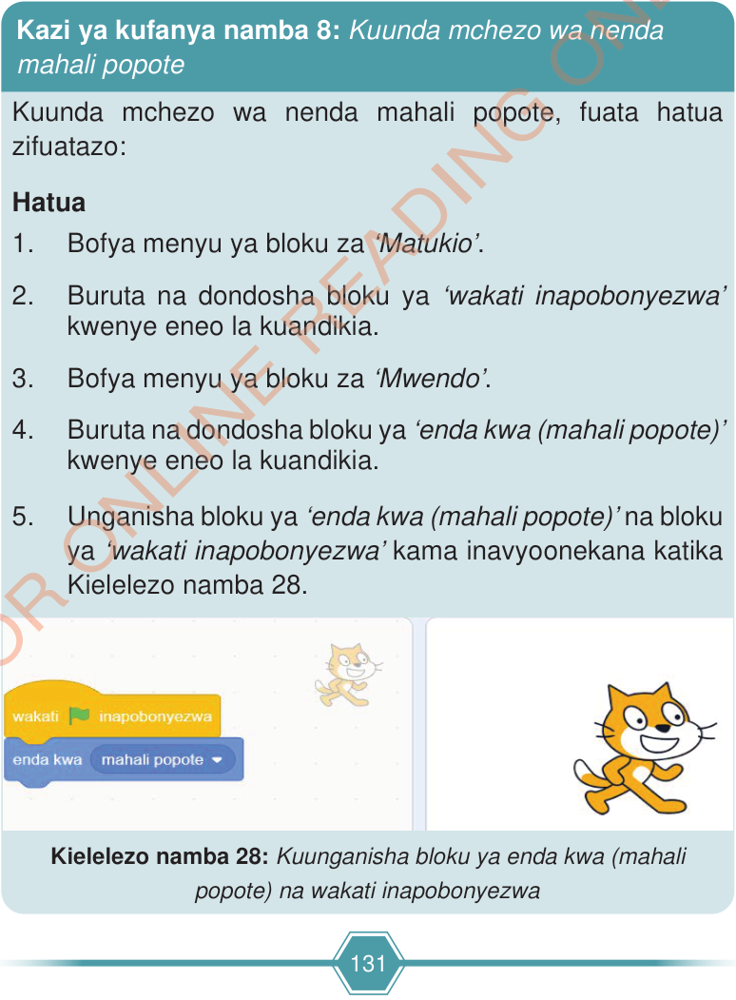

6.Bofya au tumia mishale kibendera cha ‘Anza’ ili kucheza mchezo wako.
7.Endelea kucheza ili kuona namna ‘Sprite’ anavyozunguka. Unaweza badilisha digrii/nyuzi kutoka 15 kwenda 45 ili kuona zaidi jinsi Sprite anavyozunguka. Je, umeona/umesikia/umehisi nini baada ya kubadili digrii/nyuzi?

Kielelezo namba 28: Kuunganisha bloku ya enda kwa (mahali popote) na wakati inapobonyezwa